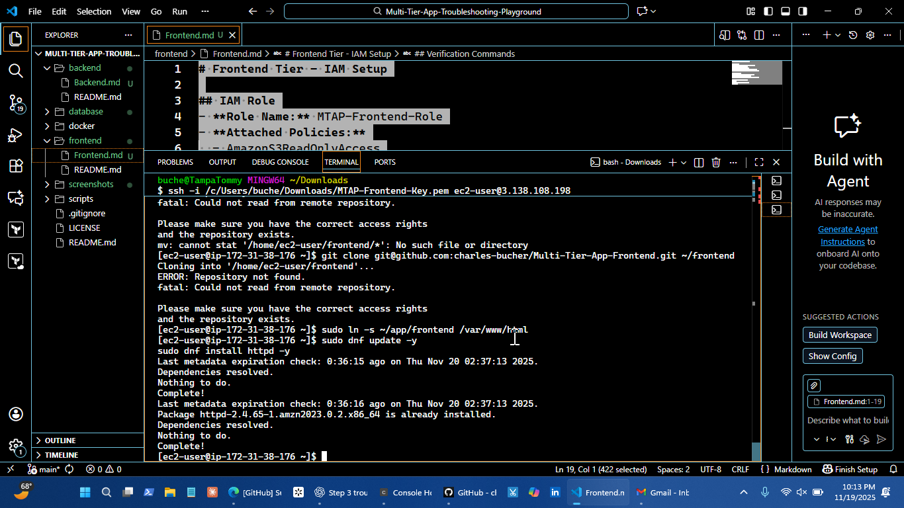
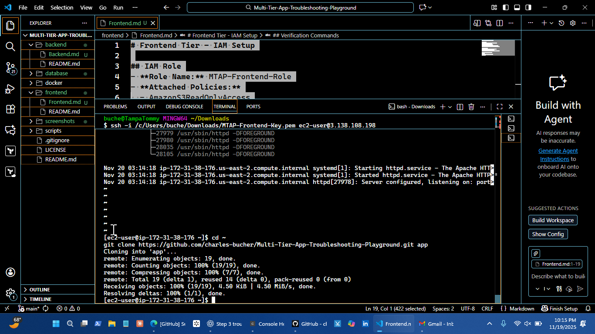
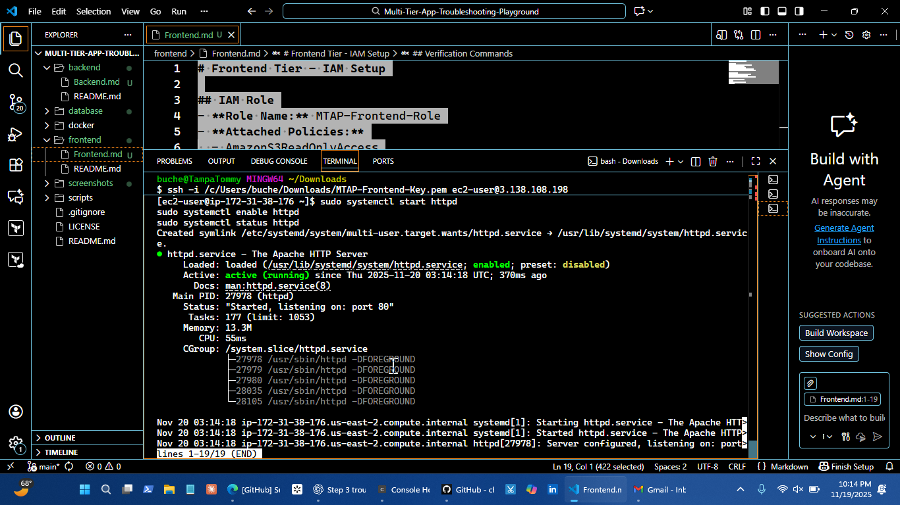
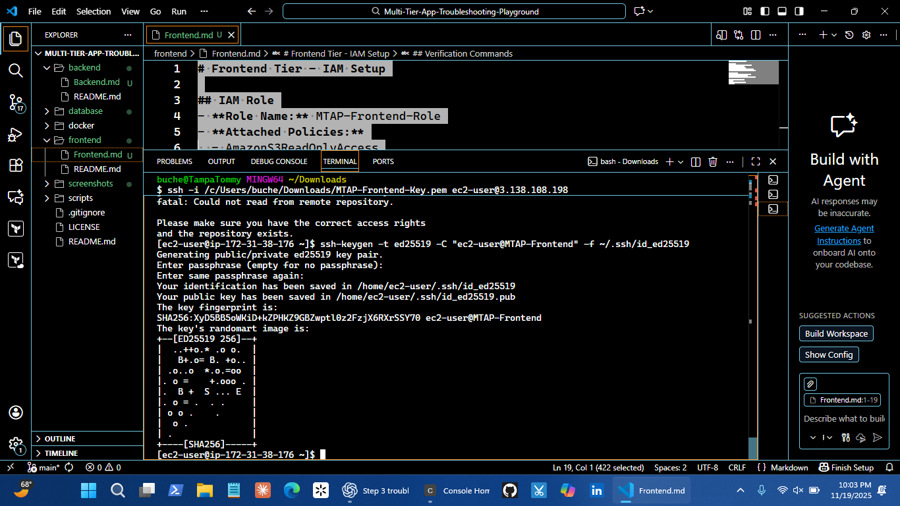

Portfolio Projects
Multi-Tier App Troubleshooting Playground
Hands-on AWS CloudOps lab deploying multi-tier web applications using EC2, VPC, Load Balancers, and CloudFormation/Terraform. Designed for troubleshooting, monitoring, alerting, and incident response practice.



Technologies:
AWS Monitoring & Observability
End-to-end AWS monitoring and alerting pipeline for EC2 health, performance metrics, and anomaly detection. Includes automated incident response to simulate real Cloud Support & NOC workflows.

Technologies: